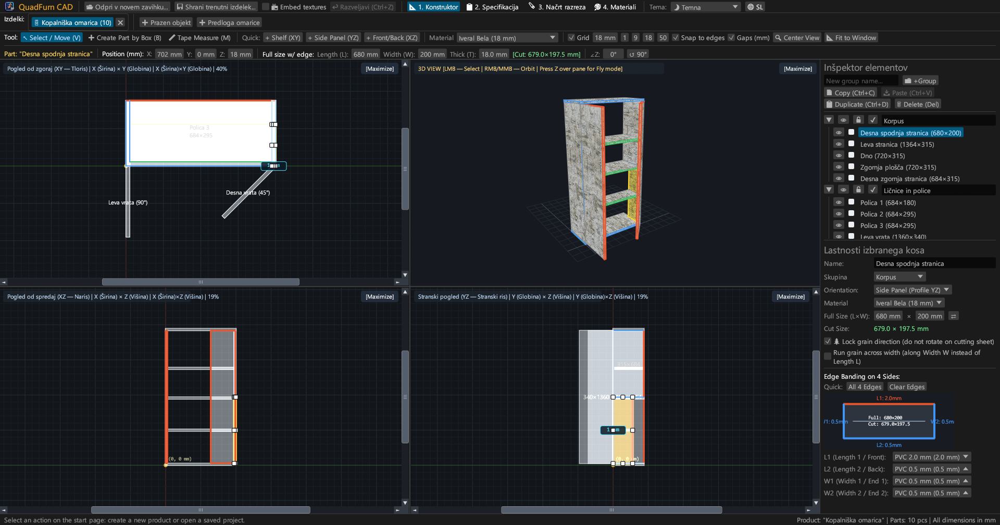
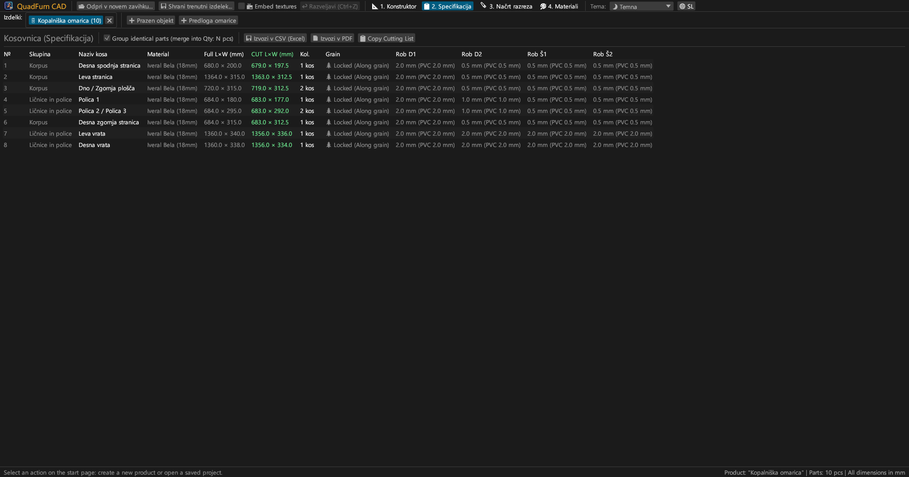
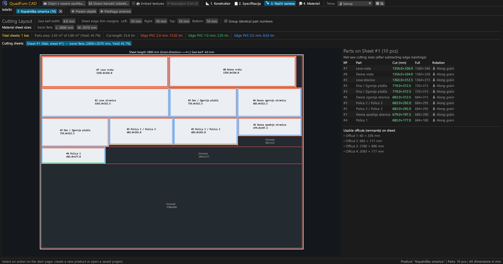
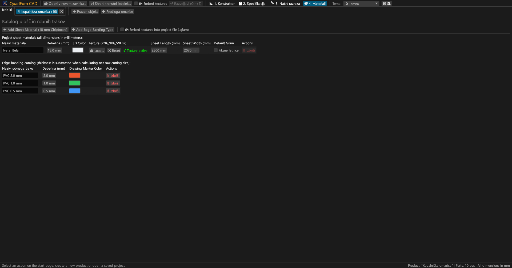
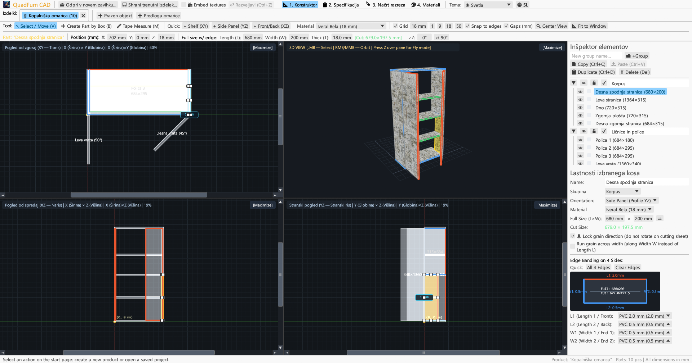
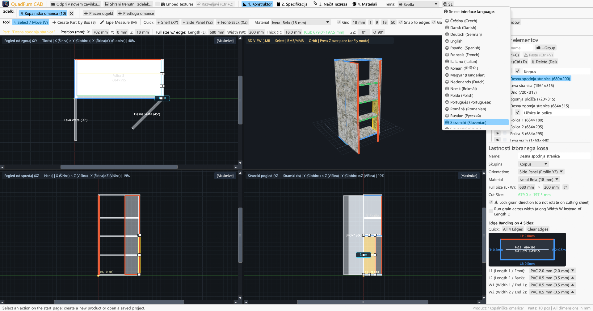

Hiter CAD za mizarje in pohištvene delavnice. 4-pogledno sinhrono modeliranje, vnos formul v dimenzije, odštevanje robnih trakov in razrez.

Združuje 4-pogledno risanje, neposreden številski nadzor in gilotinski razrez v enem programu.
Sočasno urejanje v Tlorisu (XY), Narisu (XZ), Stranskem risu (YZ) in 3D z drsniki, magnetnim pripenjanjem in merami odmikov.
Neposreden vnos koordinat (X, Y, Z), mer (D × Š × D) in kota z matematičnim kalkulatorjem (npr. 600-4 ali (800-36)/2).
Določitev ABS/PVC robnih trakov (0,4–2,0 mm) na 4 straneh za izračun natančnih čistih rezalnih mer za žago.
Rezalni algoritem, ki upošteva smer lesnih vlaken, rezalno režo žaginega lista (4,0 mm), obreze in evidenco ostankov.
Sočasno delo na več kosih pohištva v zavihkih. Kopiranje in lepljenje elementov s prenosom materialov.
Pripravljen za tisk v formatu A4 Ležeče: kosovnica, 4-pogledne risbe, krojne sheme in poraba materiala s +15 % rezerve.





Samostojne izvršljive datoteke brez zunanjih odvisnosti.
Prenosna različica z ikono, namestitev ni potrebna.
sudo apt install ./quadfurn_0.2.2_amd64.deb
Univerzalni paket za Apple Silicon (M1–M4) in Intel x86_64.
| Tipka | Dejanje | Področje |
|---|---|---|
| V | Orodje Izbira / Premakni (8 ročic, izbira z okvirjem) | 2D pogledi |
| B | Ustvari element z okvirjem v aktivni ravnini | 2D pogledi |
| M | Merilni trak (natančno merjenje razdalj v milimetrih) | 2D pogledi |
| Z | Prosti let iz prve osebe (Noclip z WASD) | 3D okno |
| ← → ↑ ↓ | Premik elementov za korak mreže (Shift za dvojni korak) | 2D pogledi |
| Ctrl + C / V | Kopiraj / prilepi elemente (med zavihki) | Vsi zavihki |
| Ctrl + D | Podvoji izbrane elemente z odmikom | Aktivni projekt |
| Ctrl + S | Shrani projekt v datoteko .qfurn / .json | Aktivni projekt |
| Ctrl + Z | Razveljavi zadnje dejanje (do 40 korakov) | Aktivni projekt |
| Delete / Backspace | Izbriši izbrane elemente | Aktivni projekt |